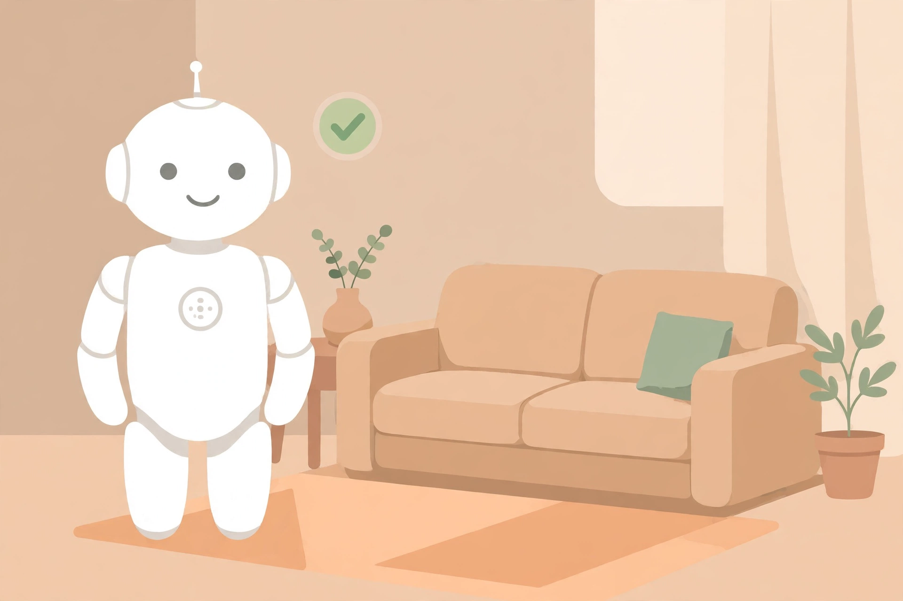

2026년 11월 17일

LG전자가 가정용 로봇 '클로이드'의 국내 안전 시범인증을 추진합니다. 지난 13일 한국로봇산업진흥원과 업무협약을 맺고, 휴머노이드 로봇의 안전성과 사용성을 평가하는 체계를 함께 만들기로 했다고 16일 밝혔습니다.
휴머노이드는 사람과 같은 공간에서 생활하고 일합니다. 그래서 집안일을 얼마나 잘하는지뿐 아니라, 사람이 가까이 있을 때도 안전하게 움직이는지, 사용자가 로봇을 쉽게 조작하고 멈출 수 있는지가 실제 도입을 좌우합니다. LG전자는 로봇이 집에 들어오기 전에, 개발 단계부터 이런 기준을 검증하겠다는 구상입니다.
로봇이 집안일을 돕는 시대가 오려면 "잘하느냐"보다 "믿고 맡길 수 있느냐"가 먼저입니다. 안전 인증이 그 신뢰의 출발점이 될 수 있습니다. 내년 1분기 공개될 이족보행 로봇이 어떤 모습일지, 클로이드가 우리 집 거실에 들어오는 날이 얼마나 남았는지 지켜볼 만합니다.